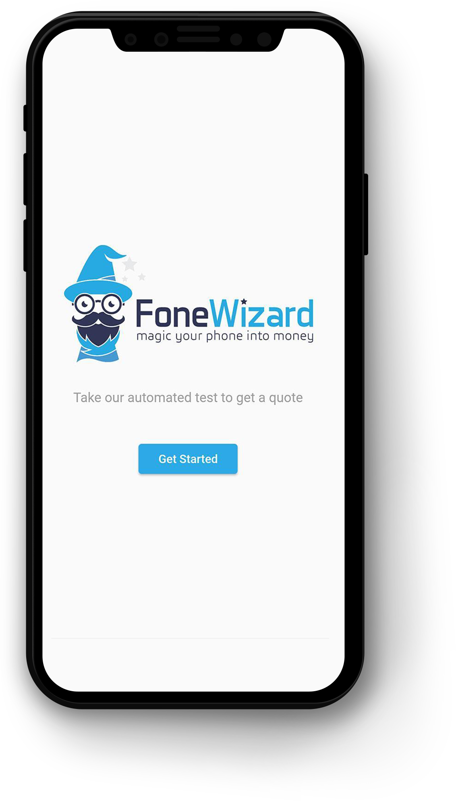

Client
FoneWizard (subsidary of MTR Ltd) is a company that aims to save on the amount of electronic waste that ends up in landfill. They do this by buying and selling refurbished devices such as phones, laptops and tablets.
Project
Beginning in 2017, FoneWizard commissioned me to create an app that would allow users to
remotely calculate a quote for the value of their phone. It would do this by first reading a
plethora of system info such as brand, storage size etc. It would then take the user through a
series of tests that would allow them to report on the condition of components including:
- Camera
- LCD Screen
- Audio
- Bluetooth
- Wifi